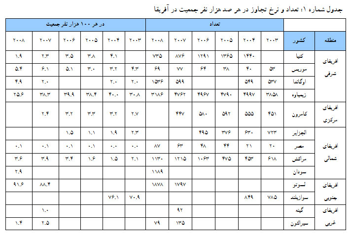
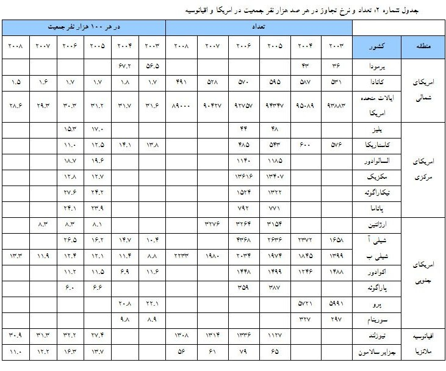
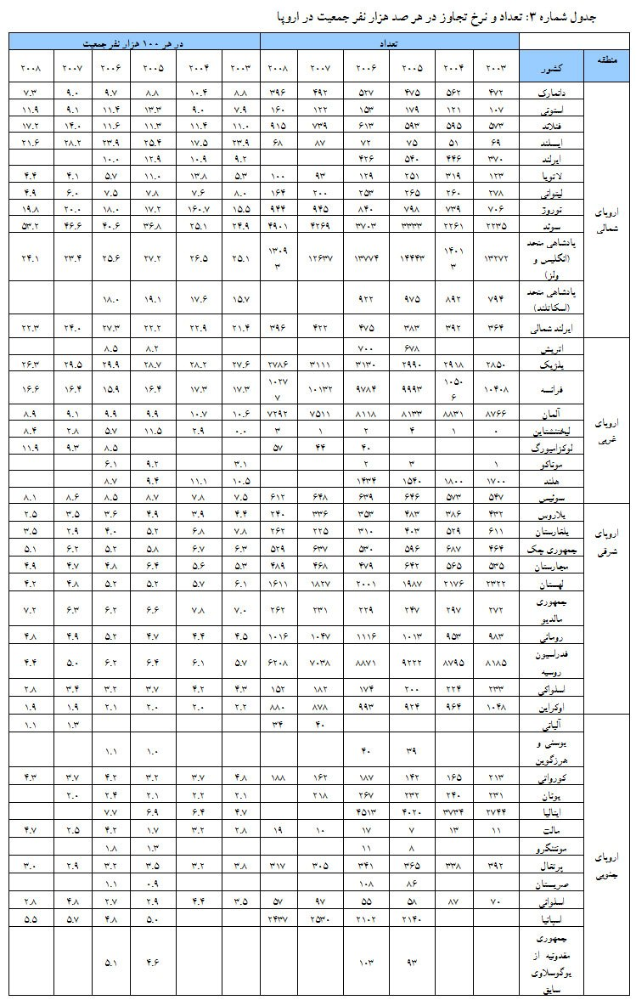
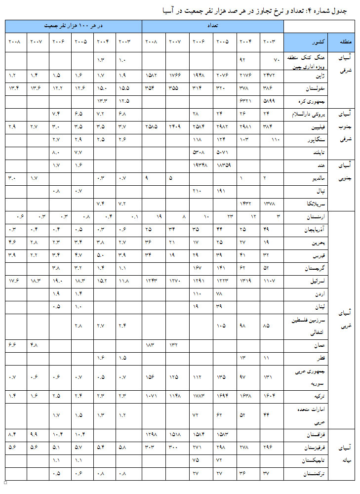

پذيرش > سایت نوشته ها > تجاوز جنسی؛ پنهان ترین خشونت علیه زنان


 تجاوز جنسی؛ پنهان ترین خشونت علیه زنان تجاوز جنسی؛ پنهان ترین خشونت علیه زنان
13 آبان 1390 - جلوه جواهری - نسخه قابل چاپ
خشونت جنسی به هر گونه رفتار غیر اجتماعی اطلاق می شود که از لمس کردن تا تجاوز را در بر می گیرد. این نوع خشونت ممکن است در حیطه زندگی خصوصی، زناشویی و خانوادگی اتفاق بیفتد و به صورت الزام به تمکین از شوهر یا رابطه محارم با یکدیگر در حلقه خویشاوندی علیه زن اعمال گردد. در حیطه زندگی اجتماعی نیز از سوی فرد ناشناس تحقق پیدا می کند (کار، 1380: 346).
تجاوز جنسی هر روزه علیه بسیاری از زنان در عرصه اجتماعی اعم از خیابان، پارک ها، محیط کار، دانشگاه و ... رخ می دهد. سالانه میلیون ها زن و کودك در سراسر جهان قربانی حمله ها، تجاوزها و سوء استفاده هاي جنسی می شوند. طی سال هاي اخیر، آمار رسمی در تمام کشورها بر افزایش قابل ملاحظه این دسته از جرایم صحه گذاشته اند (دادستان، 1382؛ تقی خانی، 1381). بنابر گزارش سازمان جهانی بهداشت، در اولین مطالعه بین المللی و فراگیر در زمینه انواع خشونت، تنها در سال 2002، 150 میلیون دختر و 73 میلیون پسر زیر 18 سال در جهان مورد آزار جنسی قرار گرفته اند (پین هرو، 2007). در سال 1998 حدود یک چهارم جمعیت ایالات متحدة امریکا به نوعی قربانی سوء استفاده هاي جنسی بوده اند (جنیفر و دیگران، 1999، به نقل از دادستان، 1382).
در ایران نیز با آنکه آمار تجاوز جنسی بسیار پنهان است اما طی ماه های گذشته، گزارش هایی مبنی بر تجاوزهای جنسی جمعی منتشر شد که افکار عمومی را به سمت یافتن چرایی و چگونگی برخورد با این مسئله کشاند؛ از جمله فاجعه کاشمر و خمینی شهر.
در حادثه کاشمر که اردیبهشت امسال رخ داد، 50 مرد به یک زن در روستای قوژد تجاوز کردند اما واکنش اولیه دادستان این بود که تا زن طرح شکایت نکند، وارد عمل نخواهد شد. پس از طرح شکایت از سوی زن، 13 نفر از متجاوزان از سوی نیروهای نظامی و امنیتی شناسایی و دستگیر شدند (مهر، 29 خرداد 1390).
در حادثه تجاوز گروهی خمینی شهر، 12 نفر از جوانان این شهرستان که گفته می شود حداکثر 25 سال سن داشتند، با حمله به باغی که در آن تعدادی خانواده (13نفر) در جشنی خانوادگی بودند، دست و پای مردان را بستند و پس از انتقال زنان به باغ دیگری به آنها تجاوز کردند. در پی این تجاوز گروهی و مطرح شدن این موضوع، رئیس پلیس اصفهان از رشد 113 درصدی تجاوز به عنف خبر داد. وی عنوان کرد که حوادثی مانند فاجعه خمینی شهر رویدادی طبیعی است و در شهرهای دیگر نیز اتفاق می افتد (خبرآنلاین، 5 تیر 1390).
پس از انتشار این گزارش ها، تحلیل ها و نظرهای متفاوتی در این باره مطرح شد. برخی تا آنجا پیش رفتند که قربانیان را متهم به رفتار یا پیشینه نامناسب کردند و برخی به گسترش جرایم خشونت بار در سطح جامعه در اثر تغییر شرایط اجتماعی و اقتصادی و بحران های موجود پرداختند، برخی نیز به گسترش تبعیض های جنسی و نگاه ضد زن در سطح جامعه اشاره کردند و ... اما به جز آن دسته از سیاستمداران که سعی در انکار این مسئله دارند و یا سنت گرایانی که در هر صورت زن را مقصر می دانند، نکته ای که از ذهن تحلیل گران این مسئله دور نمانده است، توجه به گسترش این موضوع و نارسایی و ناتوانی قوانین ایران در قبال برخورد با آن است.
از طرف دیگر، در حوزه خصوصی نیز باید به مسئله تجاوز توجه نشان داد. در واقع، خانه و محیط خصوصی یکی از مکان هایی است که فرد بزه کار به راحتی می تواند از روابط درون آن برای مصون ماندن خود بهره گیرد. به ویژه، روابط نابرابر قدرت در خانواده به بروز این امر کمک می کند. هر چه این مسئله در خانه ها بیشتر رخ دهد به پیش آمد آن در جامعه نیز دامن می زند. از همین رو، یکی از مسائلی که همواره در جرم شناسی خشونت خانوادگی علیه زنان و کودکان در جهان مطرح بوده، تجاوز به زنان و سوء استفاده جنسی از کودکان در محیط به اصطلاح امن خانه است. این در حالی است که در ایران، نه تنها زنان به دلایلی هم چون ارتباط با مرتکب تجاوز، ترس از انتقام جویی فرد مرتکب تجاوز، حفظ آبرو و شرم از بیان ماجرا، ترس از برخورد دستگاه عدالت کیفری و نگاه جامعه به این رویداد و مقصر قلمداد کردن قربانی، از گزارش کردن تجاوز به پلیس روگردانند، بلکه به دلیل قانونی که تمکین خاص از مرد را از وظایف زن می داند و براساس آن، زن باید به هر گونه رابطه جنسی با همسر خود تن دهد، به نوعی تجاوز به زن در خانه به صورت قانونی، کاملا امکان پذیر و مشروع به حساب می آید. همچنین، آمار ازدواج دختربچه های کم تر از 18 سال در سایه عرف و قانون[1] و تبلیغاتی که از طرف دولت برای چنین ازدواج هایی صورت می گیرد، نسبتا قابل توجه است. به طوری که براساس آمارهای رسمی در سال 89 بیش از ۹۰۰ هزار کودک متاهل در کشور وجود دارد که ۸۵ درصد آنها دختر هستند. طی سال 87 حدود 4.28 درصد از ازدواج های صورت گرفته بین دختران 10 تا 14 سال بوده است. این رقم در سال 1388 با افزایش روبه رو بوده و به 4.5 درصد رسیده است. 449 ازدواج دختربچه زیر 10 سال (0.1 درصد)، 40160 ازدواج دختربچه کمتر از 15 سال (4.5 درصد) و 301246 ازدواج دختران بین 15 تا 19 سال (33.8 درصد) در سال 88، ثبت شده است. در این سال، بیشترین تعداد ازدواج ثبت شده در میان زنان با گروه سنی 20 تا 24 سال (36 درصد) است (سازمان ثبت احوال کشور، 1389). اما در سال 1389، بيشترين تعداد ازدواج ثبت شده در میان زنان مربوط به گروه سنی 15 تا 19 سال با تعداد 169068 بوده که در سه ماهه اول سال 90 هم به همین شکل است (سازمان ثبت احوال کشور، 1389و 1390). همچنین در 9 ماهه اول سال 1389، 5 مورد ازدواج زیر 10 سال و 458 ازدواج زیر 14سال تنها در هرمزگان به ثبت رسیده است.
براین اساس، دخترانی که در سن پایین و بدون آگاهی یا علی رغم میل خودشان و به خواست پدر به ازدواج فردی در می آیند به صورت قانونی و مشروع مورد تجاوز قرار می گیرند. از همین رو، مسئله خشونت جنسی و تجاوز در ایران و کشورهایی با قوانین مشابه ایران بسیار پیچیده تر است چرا که بیشتر امکان دارد که در صورت رخداد خشونت جنسی و تجاوز به ویزه در محدوده خانه، عملی مجرمانه یا یک تجاوز واقعی انگاشته نشود.
با وجود کم کاری در تهیه و بازتاب آمار خشونت جنسی و تجاوز، این آمار در نقاط مختلف دنیا، کم یا زیاد، درست یا نادرست وجود دارد که می توان با نگاهی به آن دریافت که در چه مناطقی بیشتر رخ می دهد. گرچه این رخداد ممکن است واقعی نشان داده نشده باشد. در واقع، این امکان وجود دارد که کشورهایی با آمار بالاتر تنها به دلیل آنکه این پدیده را کمتر پنهان نگاه داشته اند، دارای فراوانی بالاتری در این مورد باشند.
در ادامه نگاهی اجمالی به آمار تجاوز در جهان در مناطق مختلف جهان طی سال های 2003 تا 2008 می اندازیم.
آمار تجاوز در جهان
جداول 1 تا 4 شمار تجاوزهای ثبت شده را در برخی کشورهای جهان طی سال های 2008-2003، که به سازمان ملل متحد ارائه شده است، نشان می دهد[2]. این آمار بر اساس مناطق جهان در جداول مذکور طبقه بندی شده اند. همان طور که مشاهده می شود، آمار تجاوز جنسی در ایران در میان این کشورها نبوده که نشان دهنده عدم ارائه آمار تجاوز به سازمان ملل متحد از سوی ایران طی این سال هاست.
این آمار، آن دسته از تجاوزهایی که گزارش نشده یا به ثبت نرسیده را در برنمی گیرد. بعلاوه، هر مورد گزارش شده ای هم لزوما به محاکمه کشیده نشده و مجرمیت را در پی نداشته است و مهم تر از آن تعریف متفاوت مناطق و کشورها از تجاوز است. به طور مثال، تعریف تجاوز جنسی در قانون سوئد چنین است: «شخصی که درگیر خشونت شود؛ یا شخصی که به بروز خطر حتمی و قریب الوقوع تهدید شود؛ یا اجبار شخص دیگر برای داشتن آمیزش جنسی یا به کار گماشتن در یک عمل جنسی نظیر آن؛ که ماهیتا به خشونت و پیامدهای آن منجر می شود؛ رابطه جنسی اجباری اطلاق می شود»، اما در بسیاری از کشورهای دیگر موارد به روشنی تعریف نشده اند. شاید از همین روست که سوئد (53.2 در هر صد هزار نفر) پس از لسوتو (91.6 در هر صد هزار نفر) بالاترین نرخ تجاوز در جهان را به خود اختصاص داده است.
آفریقا
آمار تجاوز در آفریقا (به تعداد و در هر صد هزار نفر) به تفکیک کشورها و مناطق پنج گانه آفریقای جنوبی، آفریقای شمالی، آفریقای غربی، آفریقای شرقی و آفریقای مرکزی در جدول شماره 1 آمده است. بالاترین نرخ تجاوز (91.6 در هر صدهزار نفر) مربوط به کشور لسوتو از آفریقای جنوبی است که این آمار در طول سال 2007 تا 2008 رو به افزایش بوده است به طوری که از 88.4 در هر صد هزار نفر به 91.4 رشد یافته است. همچنین کشور زیمباوه از آفریقای شمالی نیز آمار به نسبت بالایی را نشان می دهد (25.6در هر صد هزار نفر در سال 2008) که البته این آمار نسبت به سال های پیش از آن رو به کاهش بوده است. کمترین آمار ثبت شده مربوط به مصر در افریقای شمالی با 0.1 در صد هزار نفر و سپس، سیرالئون در افریقای جنوبی با 1.4 در هر صد هزار نفر است. با این وجود، همان طور که پیش از این نیز اشاره شد چندان نمی توان به این آمار استناد کرد چرا که ممکن است براساس حساسیت کشورها و تعاریفشان از تجاوز، آمار متفاوتی ارائه دهند.

امریکا و اقیانوسیه
در جدول شماره 2، تعداد و نرخ تجاوزهای ثبت شده یا گزارش شده طی سال های 2003 تا 2008 نمایش داده شده است. براساس این داده ها، ایالات متحده امریکا با 28.6 در هر صد هزار نفر در سال 2008 بالاترین آمار تجاوز ثبت شده در قاره امریکا را به خود اختصاص می دهد. البته با مقایسه این آمار طی سال های 2003 تا 2008 در این کشور درمی یابیم که آمار تجاوزهای گزارش شده با کاهش روبرو بوده به طوری که از 31.6 در سال 2003 به 28.6 در هرصدهزار نفر جمعیت رسیده است. پس از آن، شیلی در امریکای جنوبی با 13.3 در هرصدهزار نفر در سال 2008 بالاترین آمار ثبت شده تجاوز را داراست. اما نکته بسیار مهم در مقایسه آمار کشورهای این مناطق، ارائه آمار به سازمان ملل است. همان طور که مشاهده می شود امریکا و شیلی که بالاترین نرخ تجاوز را در قاره امریکا دارا هستند هر دو به صورت مرتب و سالیانه به سازمان ملل گزارش ارائه کرده اند.
در اقیانوسیه، نیوزلند از ملانزیا با نرخ 30.9 در هر صد هزار نفر رقم نسبتا بالایی را نشان می دهد که برعکس ایالات متحده امریکا، این نرخ طی سال های 2003 تا 2008 افزایش یافته و از 27.4 به 30.9 در هر صدهزار نفر صعود کرده است.

اروپا
در جدول شماره 3، تعداد و نرخ تجاوزهای ثبت شده یا گزارش شده طی سال های 2003 تا 2008 در اروپا (اروپای شمالی، اروپای غربی، اروپای شرقی و اروپای جنوبی) نمایش داده شده است. براساس این داده ها، تعداد تجاوز در هر صد هزار نفر در کشورهای اروپای شمالی و سپس اروپای غربی بیش از همه و در اروپای شرقی و سپس اروپای جنوبی کمتر از همه مناطق اروپایی است که در این میان، نرخ تجاوز در سوئد با 53.2 در هر صد هزار نفر در سال 2008 بیش از همه کشورهای اروپایی و در آلبانی با 1.1 در هر صد هزار نفر کمتر از همه بود. البته آلبانی تنها در سال 2007 و 2008 گزارش به سازمان ملل متحد ارائه کرده است.

آسیا
نرخ و تعداد تجاوز در آسیا به تفکیک کشورها و مناطق پنج گانه آسیای جنوبی، آسیای غربی، آسیای شرقی، آسیای جنوب شرقی و اسیای میانه در جدول شماره 4 آمده است. براساس این داده ها، اسرائیل در آمار ارائه شده به سازمان ملل با نرخ 17.6 درهر صد هزار نفر در سال 2008 بالاترین نرخ تجاوز در آسیا را به خود اختصاص داده است که این نرخ از سال 2003 همواره رو به گسترش بوده است، به طوری که از 11.8 در سال 2003 به 17.6 در هر صد هزار نفر در سال 2008 رسیده است. پایین ترین نرخ تجاوز نیز به آذربایجان و ارمنستان با نرخ 0.3 و 0.6 در هر صدهزار نفر، تعلق دارد. در میان مناطق آسیایی، کشورهای آسیای غربی بیش از سایر مناطق آسیایی تمایل به ارائه گزارش در این زمینه داشته اند.

ایران
همان طور که ملاحظه شد، ایران در طول این سال ها، گزارش و آماری درباره تجاوزهای جنسی به سازمان ملل ارائه نکرده است. در داخل ایران هم دسترسی به چنین آماری با دشواری میسر و تا حدودی ناممکن است. یعنی، علاوه بر اینکه آمار واقعی از خشونت جنسی به دلیل عدم گزارش آن وجود ندارد، بلکه همین آمار نیز انعکاس پیدا نمی کند. چنانچه گفته شد، این نوع خشونت اگر در حیطه رابطه زناشویی و خانوادگی رخ دهد کم ترین امکان انعکاس را می یابد که یکی از دلایلش، قوانین مدنی ایران است که بر اساس آن، تمکین خاص از وظایف و تکالیف زنان در رابطه زناشویی است. به این ترتیب خشونت جنسی اعمال شده بر زنان متاهل در اغلب موارد، خشونت محسوب نشده و منعکس نمی شود. همچنین از آنجایی که پدر طبق قانون ولی فرزند محسوب می شود، نه تنها خشونت جنسی پدران بر دختران و پسران خردسال به عنوان یک تابو انعکاس نمی یابد بلکه در صورت انعکاس آن، معمولا این پدرها هستند که مورد بخشش قرار می گیرند. در این صورت باید گفت، آمار خشونت جنسی در ایران به دلیل پنهان ماندن آمار واقعی در نتیجه قبح این مسئله و نبود قوانین حمایتی برای قربانیان بسیار مخدوش است. بنابراین، ممکن است همانند بسیاری از آسیب های اجتماعی در ایران زمانی این آمار واقعی تر شده و منعکس نیز شود که شاید دیگر کار از کار گذشته باشد.
تنها تحقیق ملی که در زمینه خشونت علیه زنان در ایران صورت گرفت به سال 1383 بر می گردد. نتايج این پژوهش ملی با عنوان بررسی خشونت خانگی در ۲۸ مرکز استان در ایران که توسط وزارت کشور انجام شد، نشان میدهد وقوع خشونتهای جنسی و ناموسی در سطح ملی با رقم 10.2درصد پایین ترین رتبه را نسبت به انواع خشونت های خانوادگی دیگر به خود اختصاص داده است. پژوهشگران این طرح ملی نیز تایید کرده اند که با توجه به وجود نوعی الزام، جبر هنجاری، عرفی و حتی شرعی درباره اظهار چنين خشونتهايی در جامعه و فرهنگ ايران، به طور تلويحی میتوان ميزان کم اين نوع خشونت ها را ناشی از خود سانسوری و نزاکت زنان مورد مطالعه دانست (ایسنا، 20 مهر 1383).
علی رغم ناپیدا بودن آمار خشونت جنسی و تجاوز در ایران، برخی تحقیق ها در مقیاس کوچک به بررسی این پدیده پرداخته اند. به طور نمونه، در تحقیقی که در بابل انجام شده، 13درصد قربانیان اعمال فشار و خشونت جنسی را در روابط جنسی عنوان نمودند (بختیاری و امیدبخش، 1382). نتایج برخی تحقیقات، آمار به مراتب بالاتری را نشان می دهند، به طوری که، بر اساس نتایج تحقیقی که در کرمان انجام شده است، 28.6 درصد زنان خشونت جنسی را تحمل کرده بودند (میبدی و حسنی، 1388). همچنین، نتایج بررسی انجام شده بر روی خانواده های تهرانی در رابطه با خشونت علیه زنان نیز نشان داد که 26.9درصد زنان، دو بار یا بیشتر خشونت جنسی را تجربه کرده بودند (آزاده و دهقان فرد) و طبق تحقیقی که در شیراز انجام شده میزان خشونت جنسی 22.3 درصد نشان داده شد (باقرزاده و دیگران، 1386).
طبق تقسیم بندی طرح ملی که پیش از این به آن اشاره شد، انواع خشونت جنسی و ناموسی شامل مجبور کردن به ديدن عکس و فيلمهای خلاف اخلاق عمومی يا اجبار به روابط زناشويی ناخواسته يا غيرمتعارف است. در مطالعه ای که در اصفهان بر روی 815 زن متاهل 15 تا 49 سال صورت گرفته است، بدترين اشكال خشونت جنسي از ديدگاه پاسخ دهندگان، توقع از زن برای ارضای مردان در هر زمان ( 86 %)، عدم درك نيازهاي غريزي زن در رابطه جنسي (82 %) و رها كردن همسر بعد از ارضاي مرد (%75 ) بيان شده است (ملک افضلی و دیگران، 1383).
نکته مهم در زمینه آمار خشونت جنسی در ایران، آمار بالای این نوع خشونت علیه زنان باردار است. خشونت جنسی که می تواند یکی از بدترین انواع خشونت وارده به یک زن باردار باشد آمار نگران کننده ای را نشان می دهد. به طور نمونه، طی تحقیقی که در رابطه با خشونت خانوادگی زنان در دوران بارداری در مشهد انجام شد، 95.2 درصد از نمونه ها در طول بارداری خشونت جنسی خیلی خفیف و 0.3 خشونت جنسی بسیار شدیدی را تجربه کرده اند (بهنام و دیگران، 1387). همچنین، براساس نتایج «بررسی شیوع و نوع خشونت خانگی در زنان باردار در شهرکرد»، 13.8 درصد از جمعیت مورد مطالعه دارای نوعی همسر آزاری جنسی بودند (صالحی و مهرعلیان، 1385).
پیامدها
از آنجا که قربانیان خشونت جنسی اغلب از بیان تجربه های خود سر باز زده و تجربه آن را هم چون داغی با خود به همراه دارند، آسیب های روانی و اجتماعی آن می تواند بسیار قابل توجه باشد. به ویژه که کمتر نهادی در این زمینه به بررسی آسیب های فردی ناشی از این گونه خشونت ها بر فرد قربانی می پردازد.
زنان قربانی خشونت جنسی یا از خاطره آن صرفا در کودکی رنج می برند یا همزمان با تجربه آن، شاهد اعمال خشونت بر فرزندانشان نیز هستند. ضمنا این زنان در قبال عمل انجام شده، احساس گناه کرده و خود را سرزنش می کنند. در این موارد فراموش می شود فرد متجاوز بایستی سرزنش شود، نه قربانی که سوژه عمل مزبور بوده است (مک لاگلین و نانسی، 1996: 300 به نقل از محمدی اصل، 1388: 30)
همسرکشی یکی از پیامدهای خشونت خانوادگی علیه زنان به طور کل و خشونت جنسی به طور خاص است. تحقیقی که در سال 1380 در باب «همسرکشی»، صورت گرفته نشان می دهد زنان به ندرت دست به ارتکاب قتل می زنند و اگر قتلی مرتکب شوند (شوهر) در مواردی است که به شدت مستاصل شده و هیچ مفری نیافته اند. این بررسی نشان می دهد یکی از صورت های رایج مباشرت زنان در قتل همسر هنگامی رخ می دهد که مردان خشونت بیش از حدی اعمال می کنند که غالبا خشونت جنسی نسبت به زنان و انحرافات جنسی است، به طوری که زن احتمال تجاوز نسبت به فرزندان به خصوص فرزندان دختر خود را می دهد (آشوری و معظمی، 1380).
از طرف دیگر، پدیده ای هم چون دختران فراری از دو بعد می تواند به جرایم جنسی مرتبط باشد. از یک طرف در محیط خانه و خانواده ممکن است کودک آزاری در قالب آزارهای جنسی و حتا جرم های جنسی به وقوع پیوسته که می تواند عاملی در فرار دختران از خانه باشد و از طرف دیگر در محیط پس از نیز این دختران بزه دیده ممکن است در معرض آزارها و تجاوزهای جنسی قرار گیرند که بسیار هم شایع است (رایجیان اصلی، 1384: 23).
نمونه هایی که بیان شد تنها مختصری از پیامدهایی است که اعمال خشونت جنسی و تجاوز می تواند بر روان و جسم فرد و جامعه باقی بگذارد. برای حل چنین مسائلی که ناشی از خشونت جنسی است، نه تنها باید در آموزش ها و ساختار نهادهای موجود جامعه تغییراتی در جهت آموزش بهینه شهروندان در زمینه چگونگی برخورد با زنان صورت گیرد بلکه نیاز به نهادهای حمایتی برای پس از واقعه هستیم. هم اکنون، قربانیان خشونت جنسی و تجاوز در ایران هیچ مفری برای خود نمی یابند و هیچ مکانی، باری آنها آسایش نمی آورد و تسکین بخش درد آنان نیست. آنها قربانیان خاموشی هستند که اگر روزی از روزها زبان بگشایند هیچ قانونی به حمایت از آنها نیامده بلکه امکان بسیاری دارد که خود محکوم شوند. توجه داشته باشیم همیشه نباید منتظر اخبار پشت سر هم از تجاوزهای گروهی به زنان باشیم تا ذهن مان درگیر حل مسائل آن باشد، بلکه گاه پنهان بودن مسائل، آسیب های عمده تر و شکننده تری در پی دارد که همه را درگیر خواهد ساخت. از همین رو سرپوش گذاشتن و پاک کردن این صورت مسئله بزرگ، تنها منجر به ایجاد مسئله ای بزرگ تر خواهد شد که دیگر بار به راحتی نمی توان برای آن راه حلی جست.
منابع:
آشوری، معظمی (1380)، «همسرکشی در 15 استان کشور»، پزوهشی در موسسه تحقیقات علوم جزایی و جرم شناسی دانشکده حقوق و علوم سیاسی دانشگاه تهران.
کار، مهرانگیز (1380)، خشونت علیه زنان. تهران: روشنگران و مطالعات زنان.
دادستان، پريرخ ( 1382 ). روانشناسي جنايي. تهران: انتشارات سمت.
تقيخاني، شيلا ( 1381 ). بررسي ويژگيهاي خانوادگي، اقتصاد ي- اجتماعي، روانشناختي وشيو ههاي مقابله با استرس والدين كودك آزا ر. پايان نامه كارشناسي ارشد روانشناسي، دانشگاه الزهرا (س)، تهران.
رایجیان اصلی، مهرداد (1384)، بزه دیده شناسی حمایتی، تهران: نشر دادگستری.
بختياري، افسانه؛ اميدبخش، ناديا (1382)، «بررسي مقايسه اي زمينه ها و آثار خشونت عليه زنان در خانواده در مراجعين به مركز پزشكي قانوني بابل (1380)»، بهبود، زمستان، سال هفتم، شماره 4، پیاپی 19: 36-28.
بلالي ميبدي، فاطمه؛ حسني، مهدي (1388)، «فراواني خشونت عليه زنان توسط همسرانشان در شهر کرمان»، مجله روانپزشكي و روانشناسي باليني ايران (انديشه و رفتار)، پاييز، سال پانزدهم، شماره 3 ، پياپي 58: 307-300.
باقرزاده، راضیه؛ طاهره، کشاورز؛ فرخنده، شریف؛ صدیقه، دهباشی؛ حمیدرضا، طباطبایی (1386)، «رابطه خشونت خانگی با عوارض حاملگی، نوع زایمان و وزن زمان تولد در خانمهای زایمان کرده بستری در بخش بعد از زایمان در بیمارستانهای آموزشی وابسته به دانشگاه علوم پزشکی شیراز»، افق دانش، مجله دانشکده علوم پزشکی و خدمات بهداشتی، درمانی گناباد، دوره 13، شماره 4، زمستان: 58-51.
محمدی اصل، عباس (1388)، جنسیت و خشونت، تهران: گل آذین.
آشوری، محمد؛ معظمی، شهلا. (1380). همسرکشی در 15 استان کشور، پژوهشی در مؤسسه تحقیقات علوم جزایی و جرم شناسی دانشکده حقوق و علوم سیاسی دانشگاه تهران.
سازمان ثبت احوال کشور (1389) «مجموعه آمارهای جمعیتی کشور شامل تحلیل شاخص های جمعیتی (ولادت فوت ازدواج و طلاق)»، تهران: دفتر آمار و اطلاعات جمعیتی، خرداد 1389.
سازمان ثبت احوال کشور (1389)، «خلاصه آمار ثبت وقايع حياتي 1389»، تهران: دفتر آمار و اطلاعات جمعيتي و مهاجرت.
سازمان ثبت احوال کشور (1390)، «خلاصه آمار ثبت وقايع حياتي سه ماهه اول سال»، تهران: دفتر آمار و اطلاعات جمعيتي و مهاجرت.
Pinheiro, P. S. (2007). World report on violence against children. Geneva: United Nations Secretary.
—
[1] - بر اساس قانون، ازدواج دختران در 13 سالگی با اجازه پدر ممکن است و در مورد ازدواج دختر زیر 13 سال در صورت اجازه حاکم شرع به همراه اذن پدر قانونی است.
[2] -http://www.unodc.org/documents/data-and-analysis/Crime-statistics/Sexual_violence_sv_against_children_and_rape.xls
تا قانون خانواده برابر
ارسال به
بالاترین
،
توییتر
،
فریندفید
،
فیسبوک
در همين بخش :
 یک خبر تلخ؟ یک قانونشکنی؟ یک تصمیم بخشنامهای جدید؟ یک خبر تلخ؟ یک قانونشکنی؟ یک تصمیم بخشنامهای جدید؟
چرا بایست به سکسوالیته پرداخت؟ / نفیسه آزاد
آزارجنسی خانگی؛ «قربانی» نه، «نجات یافته»
زنان، بزرگترین بازندگان بهار عرب
سانسور از دیدگاه جنسیتی/الهه امانی
ديگر بخش ها :
طرح یک میلیون امضا
|
مقالات
|
سایت نوشته ها
|
اخبار
|
گزارش كمپين
|
گفت و گو
|
علیه سکوت
|
كوچه به كوچه
|
نامه های شما
|
گزارش ویژه
|
گفتگو با اعضا
|
ویژه سالگرد کمپین
|
تصویر برابری
|
دل آرام علی
|
تریبون
|
مقالات
|
تاریخ شفاهی
|
خارج از چارچوب
|
کتابخانه
|
درباره کمپین
|
کمپین در شهرها
|
کمپین در بند
|
صدای تغییر
|
ویژه 22 خرداد
|
لایحه حمایت از خانواده
|
گالری
|
عشا مومنی
|
امیر یعقوبعلی
|
خدیجه مقدم
|
راحله عسگری زاده و نسیم خسروی
|
پروین اردلان،جلوه جواهری، مریم حسین خواه، ناهید کشاورز
|
زینب پیغمبرزاده
|
سعیده امین، سارا ایمانیان، محبوبه حسین زاده، ناهید کشاورز و همایون نامی
|
احترام شادفر
|
نسیم سرابندی زاده،فاطمه دهدشتی
|
وبلاگ مهمان
|
پرونده خرم آباد
|
دستگیری ها
|
مریم مالک
|
پرستو اللهیاری
|
مهرنوش اعتمادی
|
سمیه رشیدی
|
Other Languages
|
همراهان
|
«فراخوان کمپین ده روز با بهاره هدایت»
| English
|